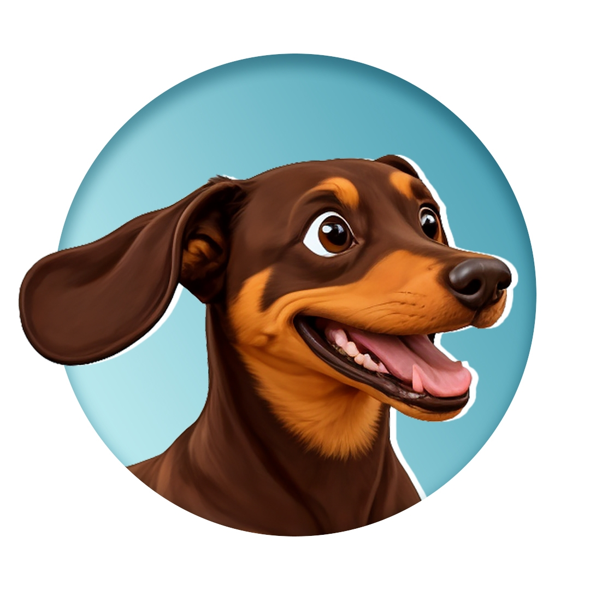
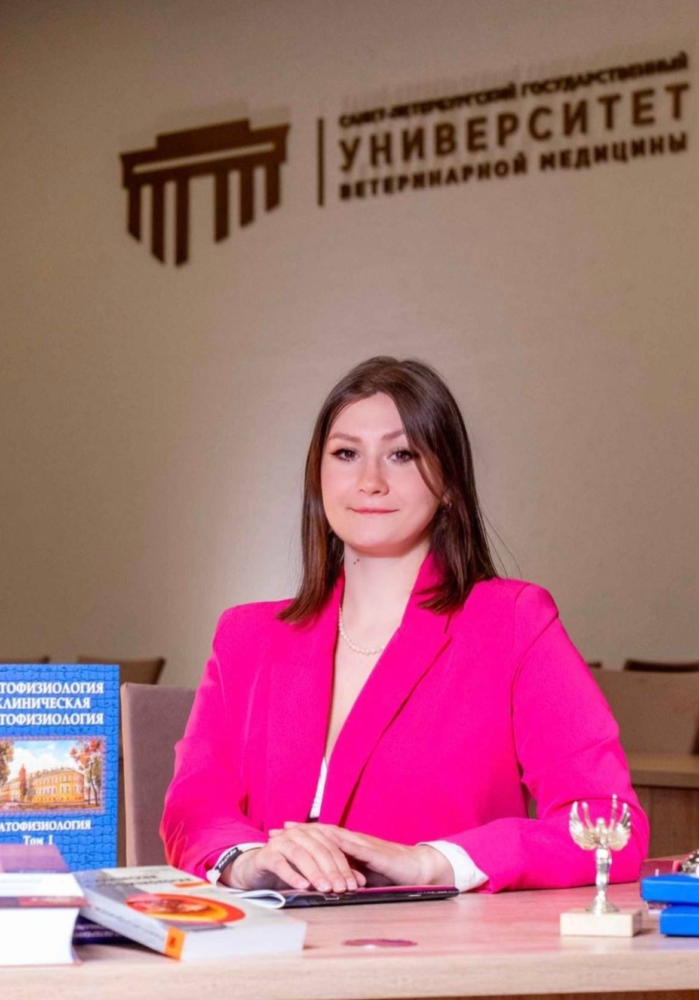
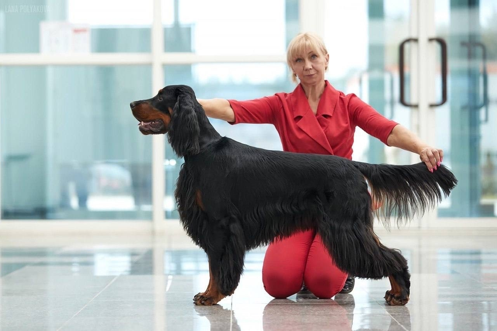
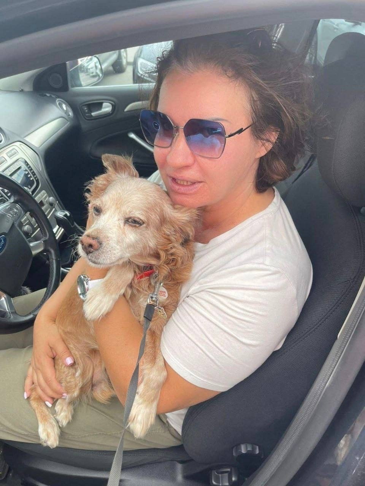
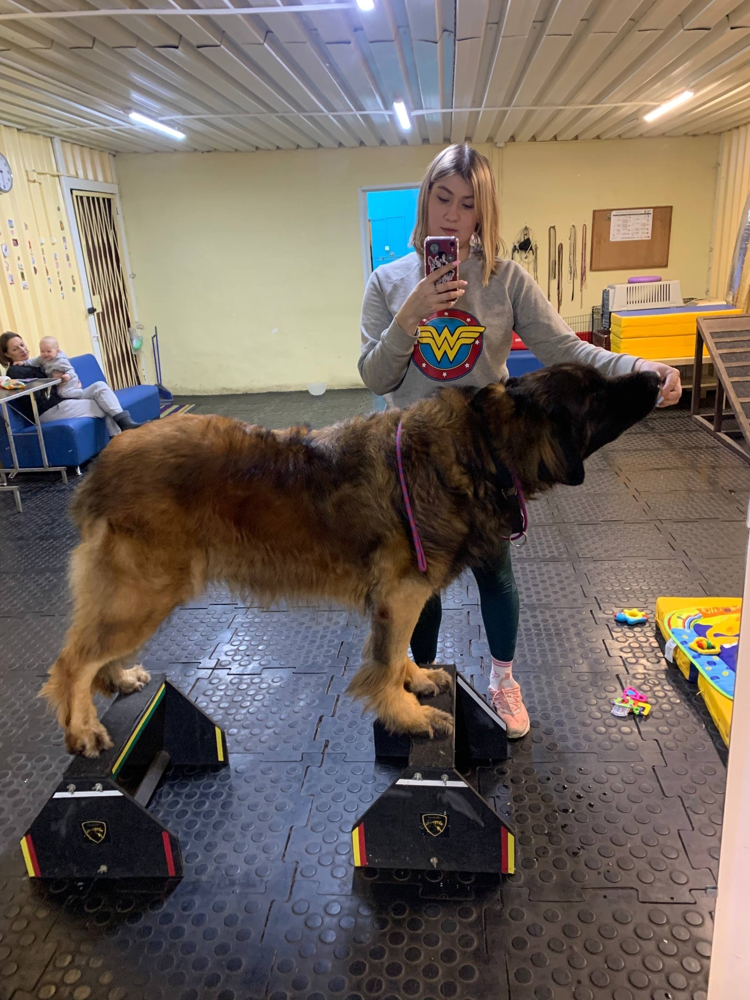
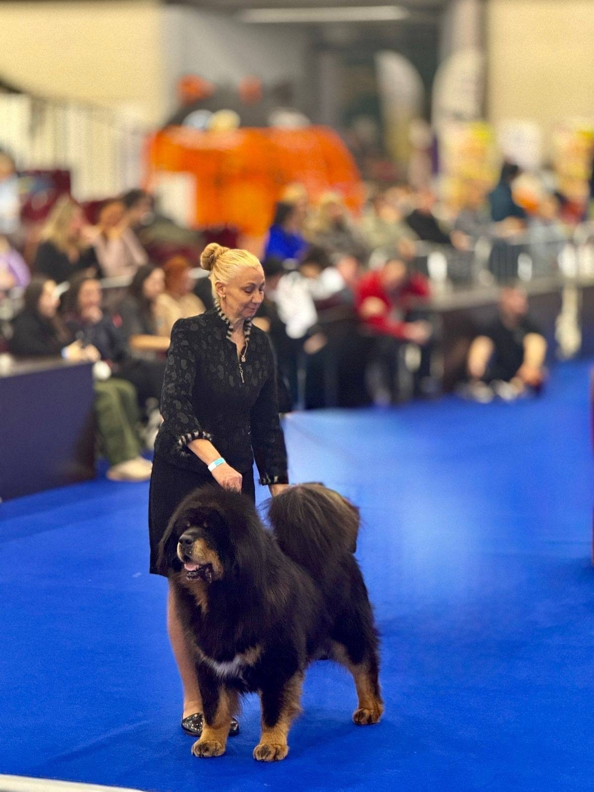
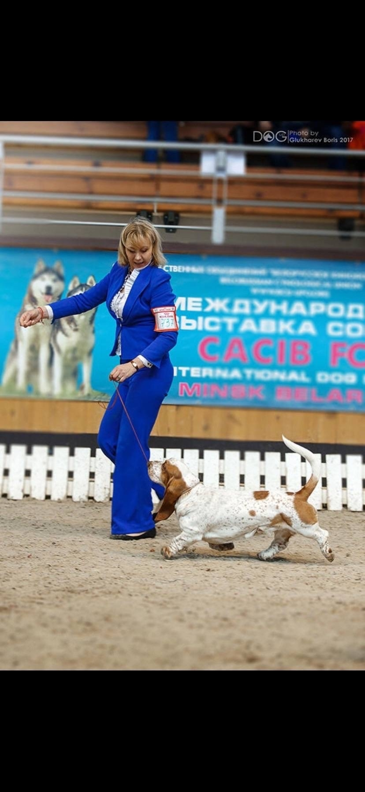
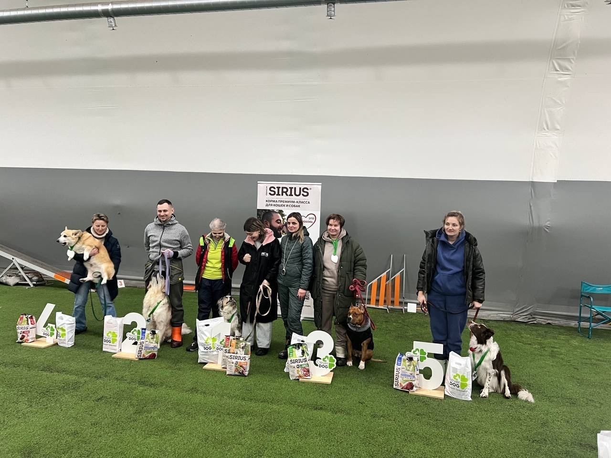
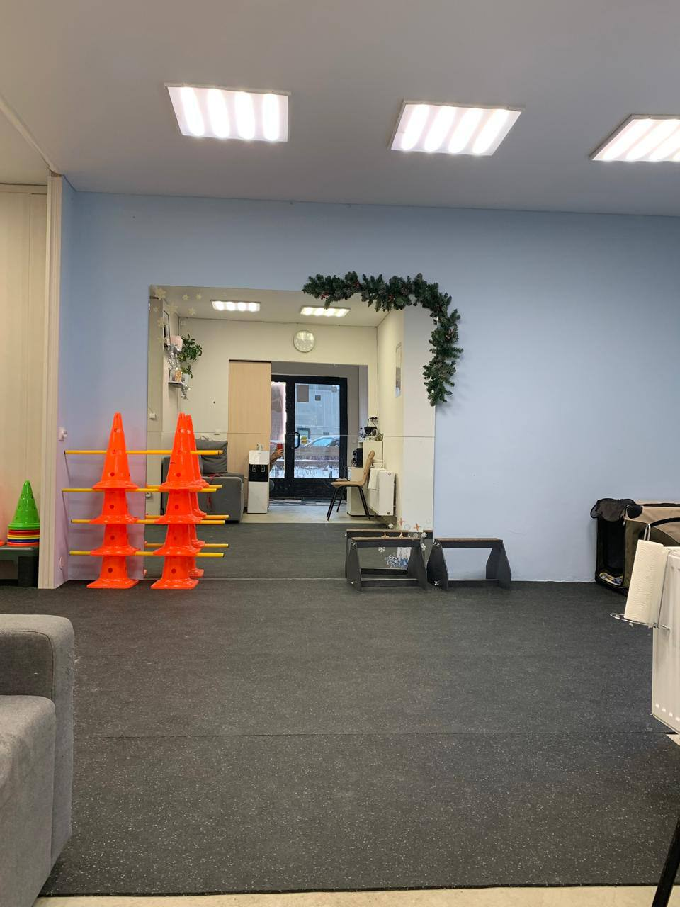
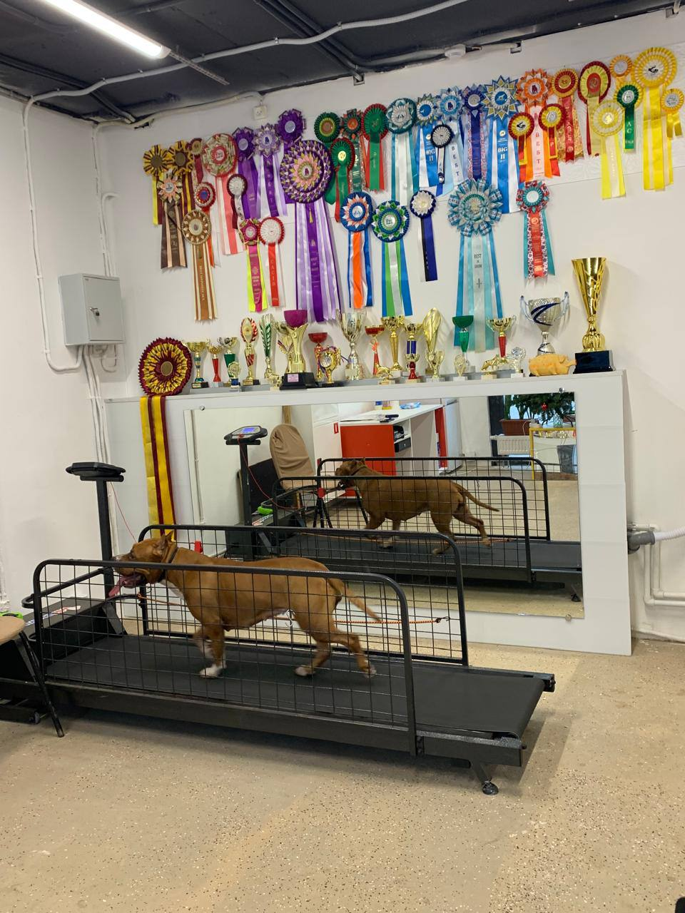

💙 Забота о каждом питомце
Внимательно относимся к особенностям, состоянию и потребностям каждой собаки.
Центр ветеринарной реабилитации собак
Реабилитируем, сохраняем, восстанавливаем и поддерживаем здоровье и активность собак.
Записаться на консультацию
Почему «Пёс&Пёс»
Внимательно относимся к особенностям, состоянию и потребностям каждой собаки.
Объединяем ветеринарную реабилитацию, физическую активность, обучение и заботу о питомце.
Работаем с энтузиазмом и стремимся подарить четвероногим друзьям возможность жить на все 100%.
О центре
«Пёс&Пёс» — команда энтузиастов, которые очень любят собак. Мы помогаем четвероногим друзьям восстанавливаться после травм и заболеваний, поддерживать форму, развивать способности и решать поведенческие задачи.
Наша главная цель — подарить каждому питомцу возможность жить на все 100%.
Что мы предлагаем
Помощь собакам с двигательными и нервными расстройствами.
Занятия для поддержания формы и физической активности.
Подготовка собак к выставкам и выступлениям.
Помощь в решении поведенческих проблем.
Развитие природных инстинктов собаки через работу носом.
Консультации по здоровью, уходу и содержанию питомцев.
Надёжный присмотр за собакой, когда владельцу нужно отлучиться.
Наша команда

Ветеринарный врач-реабилитолог, кандидат ветеринарных наук
Специализируется на восстановлении собак после травм и поддержании физической активности.

Дог-фитнес тренер, хендлер
Занимается дог-фитнесом с собаками после разрыва ПКС, с дископатиями, с дисплазией локтевых и тазобедренных суставов и другими поражениями опорно-двигательного аппарата различного происхождения.

Кинолог, дрессировщик, тренер по ноуз ворку
Помогает решать поведенческие задачи и обучать собак.
Наша атмосфера






Отзывы наших клиентов
Щенок осел на задние лапы, начал их волочить за собой, не мог на них встать. В клинике где мы наблюдались сказали, что у собаки грыжа и порекомендовали хирургическое лечение. Обратились сюда по рекомендации нашей заводчицы. Девочки (Екатерина и Светлана) поставили нашего Шрутти на все 4 лапы, постепенно все прошло и собака начала нормально ходить, бегать и прыгать. Больше проблем со спиной у нас не было.
Читать далееХочу выразить огромную благодарность нашему тренеру Светлане за ее мастерство и профессионализм и тонкий индивидуальный подход к каждой собаке. Вместе с тренировками мы получаем не только физическую, но и умственную нагрузку, а так же полноценные рекомендации по грамотному развитию и выращиванию и поддержанию здоровья нашей собаки с раннего детства. В зале всегда дружеская и приятная атмосфера, собака занимается с удовольствием.
Читать далееЭто место, куда хочется возвращаться — и не только собаке 🐾 Здесь не делают из пса «робота», а помогают ему стать увереннее, спокойнее и счастливее. Всё объясняют просто, без умных слов и строгости, зато с большим терпением и уважением к характеру собаки. Занятия проходят легко и тепло: собака учится, хозяин выдыхает, а атмосфера такая, что даже ошибки не пугают. Прогресс приходит тихо, но стабильно — однажды просто ловишь себя на мысли: «О, а ведь стало лучше». Спасибо за заботу, поддержку и любовь к хвостатым. Очень душевное место ❤️
Читать далееМы на связи
Напишите нам, чтобы узнать подробности об услугах и подобрать подходящее направление для вашей собаки.
Написать ВКонтакте